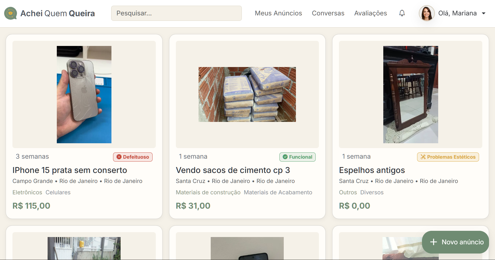
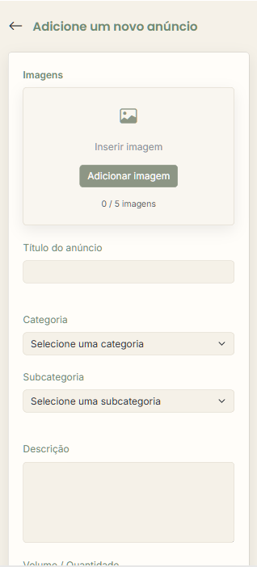
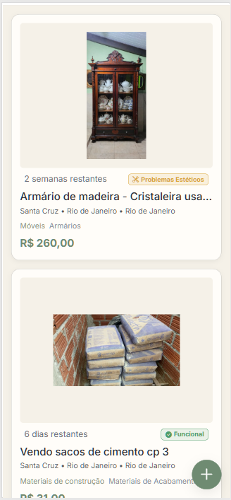

Móveis esquecidos
Armários, mesas, cadeiras e estantes ocupando espaço por meses ou anos.
Aquilo que está ocupando espaço na sua casa pode ser exatamente o que alguém do seu bairro está procurando.
O Achei Quem Queira conecta moradores próximos para que móveis, eletrodomésticos, ferramentas, materiais de construção e diversos outros itens encontrem um novo destino antes de virarem desperdício.


Em praticamente toda casa existem objetos esquecidos que ainda podem ser úteis para alguém próximo.
Armários, mesas, cadeiras e estantes ocupando espaço por meses ou anos.

Equipamentos funcionais ou defeituosos que poderiam ser reaproveitados.

Pisos, portas, janelas, tintas e materiais que costumam acabar descartados.

Itens que perderam utilidade para você, mas podem ser valiosos para outra pessoa.
Um processo simples para transformar objetos esquecidos em novas oportunidades para a comunidade.
Registre rapidamente o item que deseja disponibilizar.
Escolha categoria, subcategoria e grau de qualidade.
Seu anúncio fica disponível para moradores próximos.
Pessoas da região encontram o item facilmente.
O item ganha uma nova utilidade e evita desperdício.
Em poucos minutos seu item pode estar disponível para pessoas interessadas na sua região.
Utilize fotos claras para mostrar o item.
Utilize os graus de qualidade do AQQ.
Seu anúncio é disponibilizado na plataforma.
Tire dúvidas e alinhe detalhes da retirada.
Tudo acontece de forma local e prática.
Seu item encontra um novo destino útil.

Nem tudo precisa estar perfeito para ser útil. O sistema de classificação do AQQ ajuda as pessoas a entenderem exatamente o estado de cada item antes do contato.
Não funciona, mas pode servir para peças, manutenção, restauração ou reaproveitamento.
Funciona parcialmente, apresentando alguma limitação de uso.
Funciona normalmente, possuindo apenas desgaste visual.
Item pronto para utilização sem restrições conhecidas.

Diversos tipos de itens podem encontrar um novo destino através da comunidade local.


Todos os dias itens encontram novos destinos e ajudam pessoas próximas.

"Consegui liberar espaço na garagem e um vizinho aproveitou um armário que estava parado há meses."

"Encontrei materiais para finalizar pequenos reparos sem precisar comprar tudo novo."

"Uma mesa com marcas de uso encontrou um novo lar em poucos dias."

"Uma porta antiga que seria descartada acabou ajudando outra pessoa em uma reforma."
Recursos pensados para aumentar a segurança e a qualidade das conexões entre os usuários.

Cada item reaproveitado representa menos descarte, menos desperdício de recursos e mais oportunidades para pessoas da mesma comunidade.
Talvez aquilo que hoje ocupa espaço na sua casa seja exatamente o que outra pessoa precisa para concluir uma reforma, montar um ambiente ou dar nova vida a um projeto.
O AQQ existe para conectar essas histórias.